A klip témája
Két világ vívódása: a parázs húz vissza,
a víz enged tovább.
A klip központi témája egy toxikus, nárcisztikus dinamikájú kapcsolat, amelyből a főszereplő próbál kiszakadni. A történet nem egy konkrét szakításról szól, hanem arról a belső harcról, amikor egyszerre vonz a régi, szenvedélyes, de romboló kapcsolat, miközben megjelenik egy másik út is: egy nyugodtabb, biztonságosabb, szeretetteljesebb kapcsolódás lehetősége. A klip ezt a két világ közötti vívódást szeretné szimbolikusan megmutatni.
A klip összességében művészi, filmszerű és szimbolikus legyen, ugyanakkor legyen benne egy érzéki, szexi energia is. Fontos, hogy ne egy klasszikus narratív történetet meséljen el, hanem inkább érzéseket és belső konfliktusokat közvetítsen vizuális eszközökkel.
Színek · Hangulat · Képi világ
A vizuális világot a négy őselem határozná meg, amelyek nem szó szerint, hanem inkább hangulatként és szimbólumként jelennének meg:
gyökerek · belső világ
Föld
Erdő, barlang, természetes textúrák. A gyökereket, a belső világot és az önmagunkkal való kapcsolatot jelképezi.
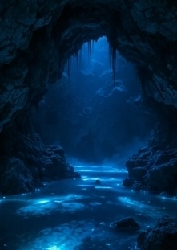
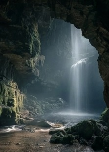
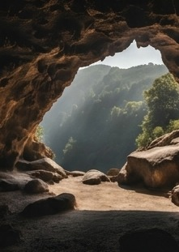
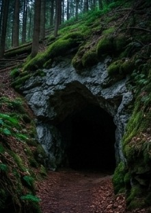
változás · elengedés
Szél
A változás, az elengedés és az átalakulás szimbóluma. Egy láthatatlan erő, ami folyamatosan mozgásban tartja a történetet.
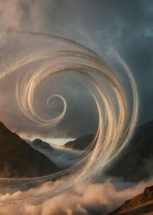
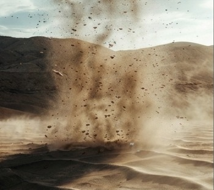
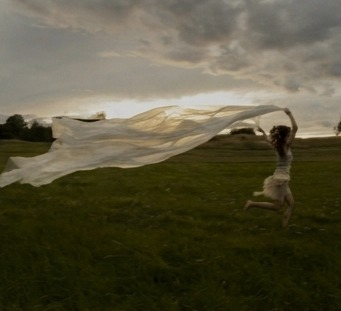
szenvedély · kísértés
Tűz
A szenvedély, a kísértés és a toxikus vonzás megtestesítője. Egyszerre gyönyörű és pusztító.
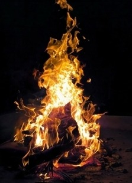
megtisztulás · újjászületés
Víz
A megtisztulás, az érzelmek és az újjászületés szimbóluma.
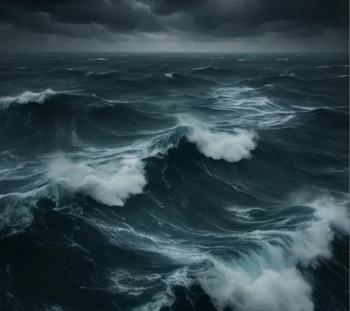
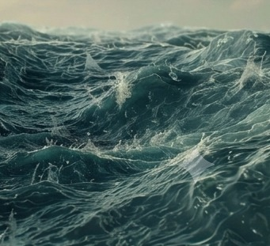
A cél nem az, hogy az elemeket szó szerint mutassuk meg, hanem hogy ezek inspirálják a helyszíneket, a fényeket, a mozgást és az összhatást. Az elemek intenzitása a klip végére elcsendesedik.
A koreográfiában két táncos is szerepelne, akik a vizuális világ természetes részei lennének, tovább erősítve az érzelmi feszültséget és a klip művészi hangulatát.
Styling · a víz világa
Áttetsző rétegek, láncok és flitter — a fény hordja a ruhát: köd, víz és vaku rajzolja körbe az alakot.
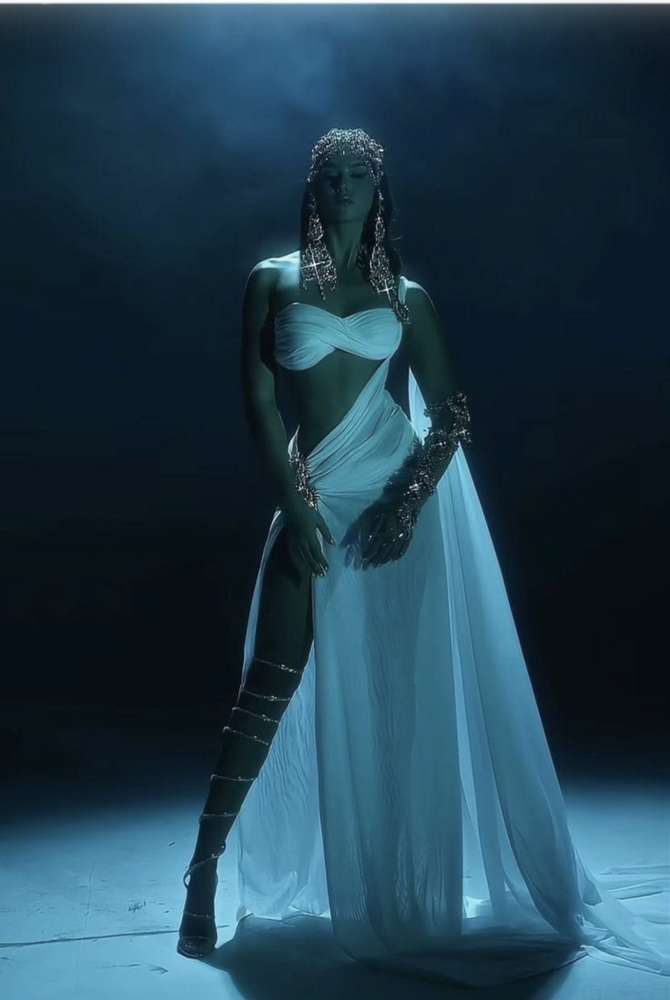
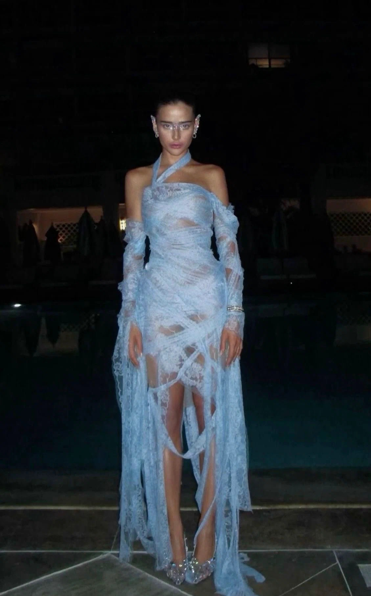
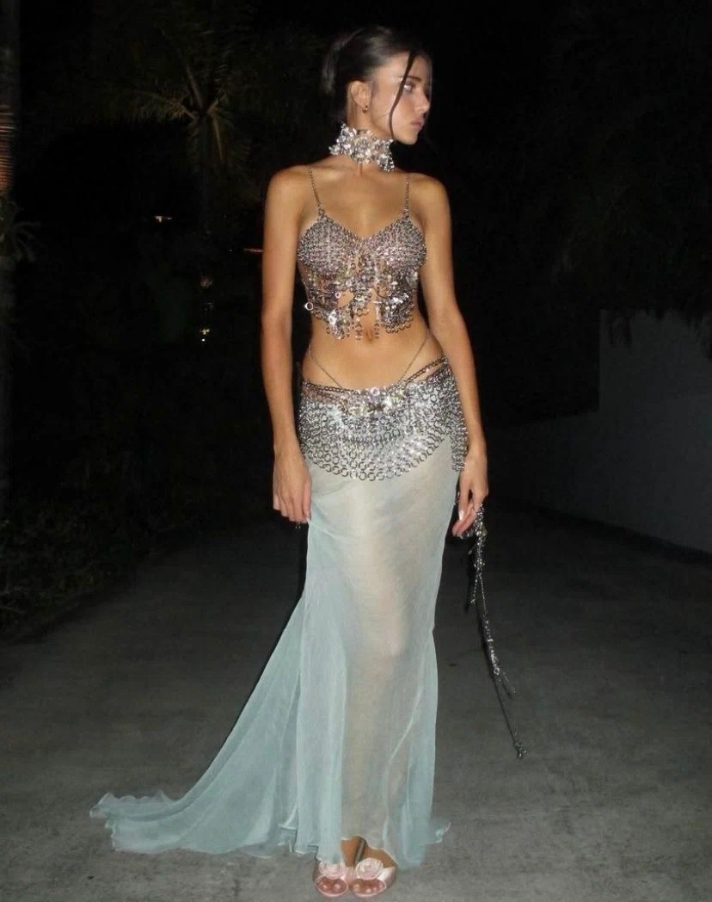
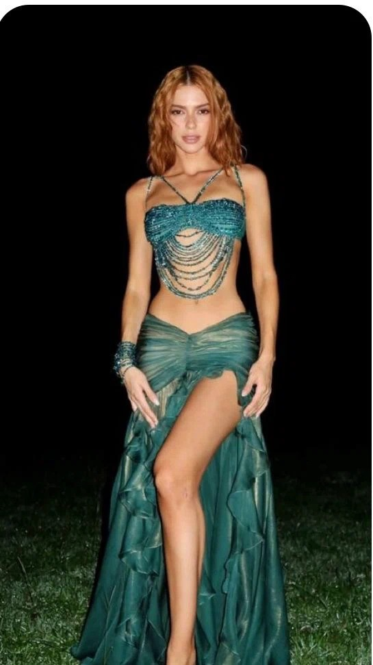
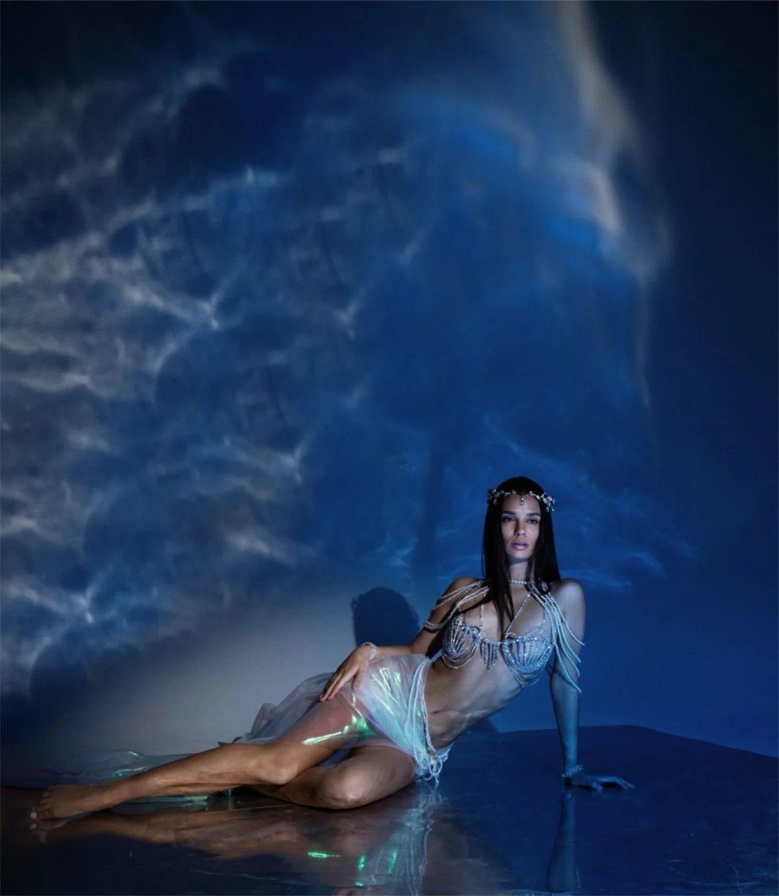
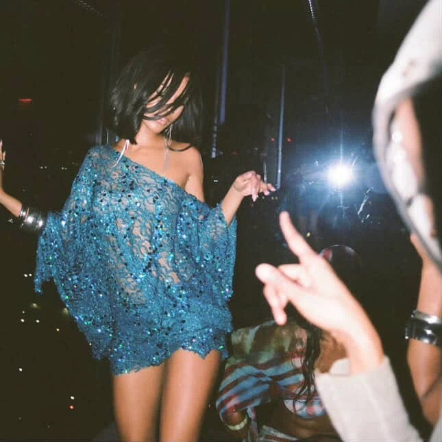
Kiegészítők · a föld melege
Body glitter, ezüst és arany kiegészítők — csillámló bőr, gyöngy és lánc a föld-tónusú textilekhez.
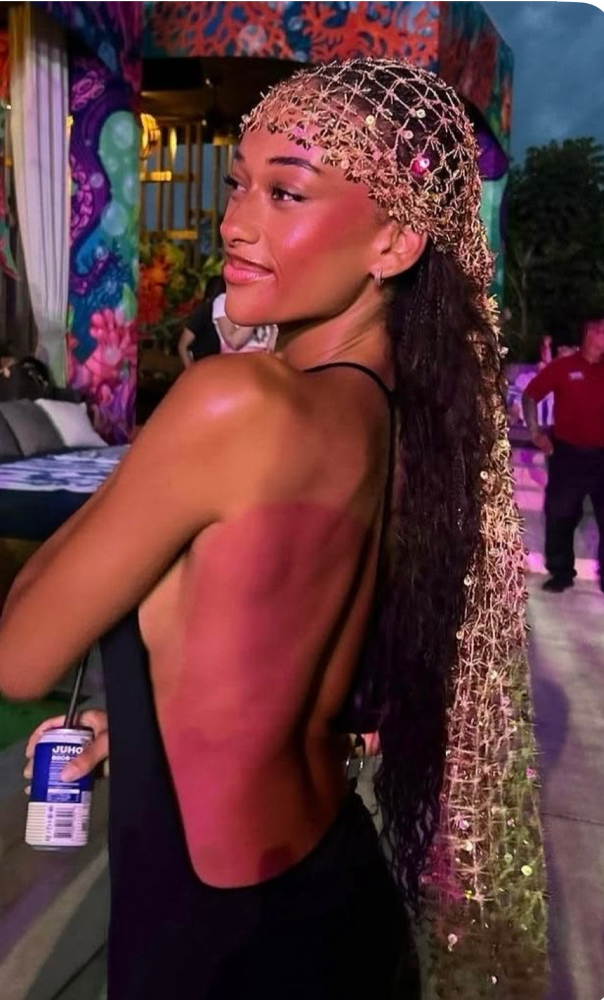
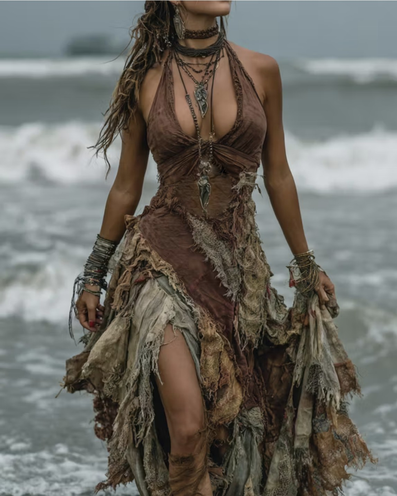
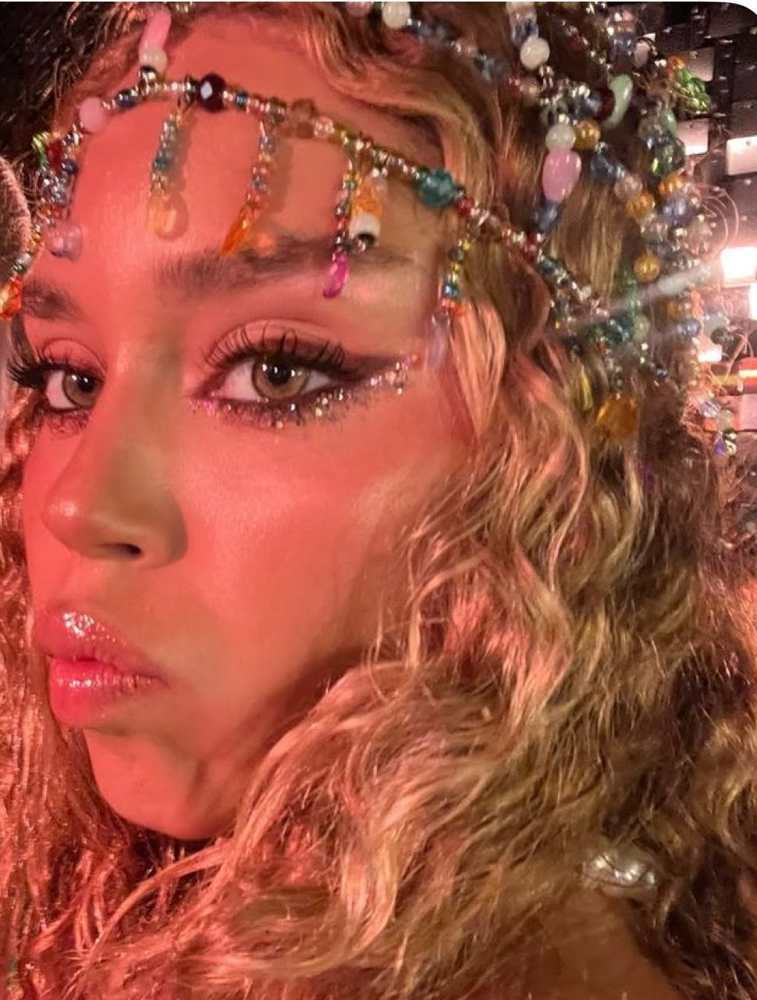
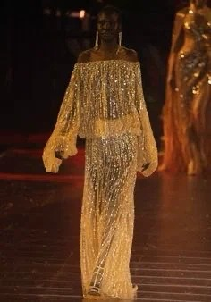
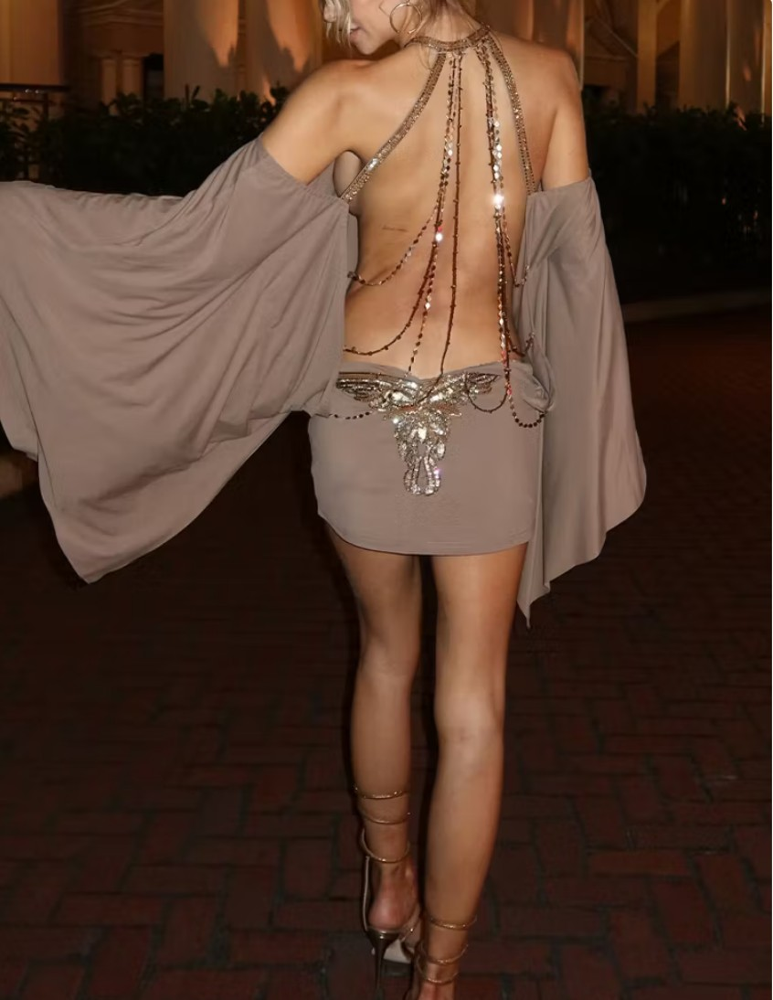
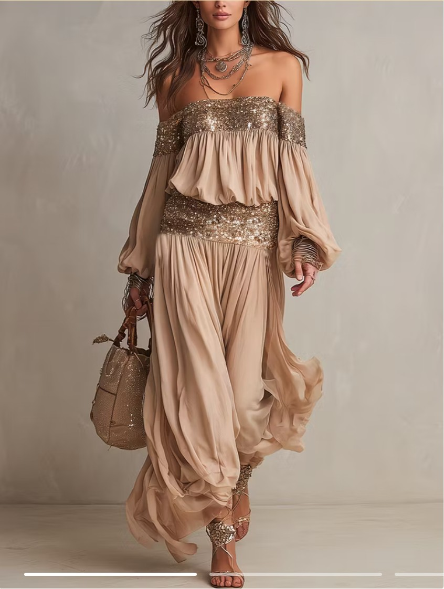
Technika a forgatásra
-
füstgép
köd és atmoszféra a fényeknek
-
vetítő (vízhez)
vízfény és kausztika a bőrre
-
szélgép / ventillátor
mozgás a hajnak és a fátylaknak